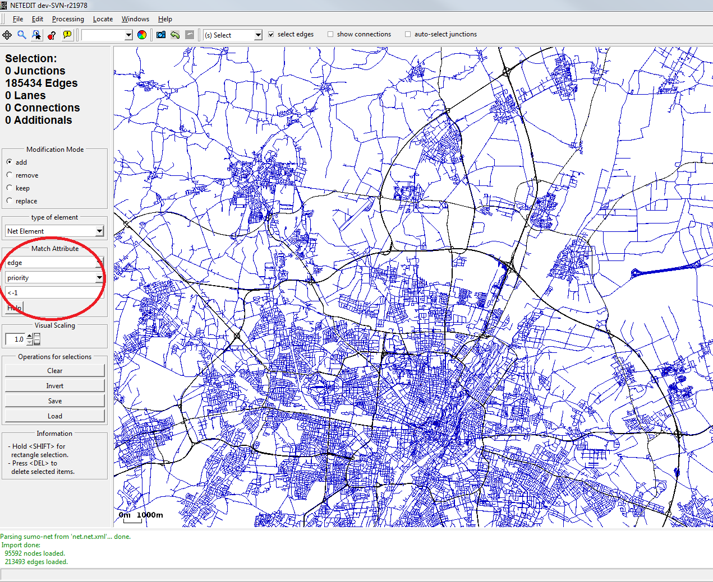

This tutorial describes how to set up a traffic scenario using mainly netedit, and some python tools; when you already have a fairly good network source for your simulation site and also a good coverage of the network with detectors giving you aggregated counts (and maybe speeds) of the vehicles in the real world. It is not limited to highways but the preconditions are met there more frequently. The focus is more on demand preparation and calibration and not so much on network tweaking.

Selected edges (blue) are of minor priority and will be discarded
A video tutorial and example files can also be found amond the SUMO Conference Tutorials.
Network#
Assuming you are already familiar with network extraction from your favorite mapping source, you can open your net with netedit and reduce it to your area of interest. Assuming you have an OSM-based network, you can select edges with 'motorway' in their type (highway.motorway, highway.motorway_link), and then click the 'Reduce' button.
Caution
in SUMO version 1.27.0 and earlier it's better you call netconvert -s old.net.xml -o new.net.xml --keep-edges.by-type highway.motorway,highway.motorway_link because the reduce operation may reduce connections and crossings unless special care is taken.
Detector data#
Detector data frequently comes in the form of two distinct pieces of information:
- a file that specifies detector ids and locations in geo-coordinates. This can be imported with the mapDetectors.py tool.
- a file that gives time stamps, detector ids and corresponding measurements. This can be imported with the edgeDataFromFlow.py tool
The corresponding commands could look like this:
python $SUMO_HOME/tools/detector/mapDetectors.py -n motorway.net.xml.gz --detector-file detectors.csv --output-file detectorss.add.xml --id-column detector_name --max-radius 100.0
python $SUMO_HOME/tools/detector/edgeDataFromFlow.py --detector-file detectorss.add.xml --detector-flow-file detector_data.csv --output-file edgedata.xml --id-column detector_name --time-column time --flow-columns count
The above command assumes that time stamps are in minutes of the day and data is aggregated per hour.
If the timestamps are absolute dates and in a different aggregation period, the command to obtain hourly counts could like this:
python $SUMO_HOME/tools/detector/edgeDataFromFlow.py --detector-file detectorss.add.xml --detector-flow-file detector_data.csv --output-file edgedata.xml --id-column detector_name --time-column time --flow-columns count --time-scale 1 --time-format %Y-%m-%dT%H:%M:%SZ --time-offset 2025-11-24T00:00:00Z --end 86400.0 --interval 3600.0
Determining the routes#
The recommended all-purpose tool for importing traffic from counting data is routeSampler.py. This tool requires some initial routes which are deemed "plausible" and which then guide the interpretation of the counting data. A simple way to get started is to compute fastest routes between random origins and destinations. This avoids loops and detours.
python $SUMO_HOME/tools/randomTrips.py -n motorway.net.xml.gz -r sampleRoutes.rou.xml
python $SUMO_HOME/tools/routeSampler.py -r sampleRoutes.rou.xml --edgedata-files edgedata.xml --edgedata-attribute count -o motorway.rou.xml
Comparison of the detected and the estimated flows#
There are two stages where deviations between measured and simulated counts can be introduced:
routeSampler.py mismatch#
When routeSampler.py fails to find a good solution, the option --mismatch-output can be used to write the mismatch between measured and assigned traffic counts. The most likely source of mismatch is an unsuitable set of candidate routes (i.e. too long or too short). See a detailed treatment at the routeSampler documentation. Ther
Simulation mismatch#
The simulation may fail to replicate the real traffic pattern and thus cars pass the detector locations at the wrong time.
Two scripts can be used to check to what extent the estimated flows correspond to the detected flows for multiple intervals.
- flowFromEdgeData.py
This script is to compare the detected and simulated edge flows. The latter one is based on SUMO's aggregated outputs. The script can be executed as following:
tools/detector/flowFromEdgeData.py -d detectors.det.xml -e edgeData.xml -f detector_flows.xml -c flow_column`
, where detectors.det.xml mainly defines the relationship between
detectors and edges; edgeData.xml is the aggregated output from SUMO;
detector_flows.xml defines the detected flow data; the flow_column is
the column, which contains flow data in the given detectors flow file. It
is also possible to specify the analysis interval and the consideration
of detectors without data. In addition to edge-based relative errors per
interval, average route flows, average detected flows, average flow
deviation, RMSE and RMSPE are also calculated as outputs.
- flowFromRoutes.py
This script is to compare the detected flows and the route flows according to the pre-defined emitted flows and routes. The basic execution call is as following:
tools/detector/flowFromRoutes.py -d detectors.det.xml -e emitters.flows.xml -f detector_flows.txt -r routes.rou.xml`
Diagnosing and fixing simulation mismatch requires investigation the following sources of error:
- network quality (missing lanes and connections may cause unrealistic jamming)
- traffic light quality (control algorithm mismatch can cause higher or lower flow)
- traffic participant calibration (i.e. time headways and merging gap acceptance)
- routeSampler result ambiguity: the space of traffic inputs that match a given set of counts is large. Not all of them may be compatible with realistic traffic flow